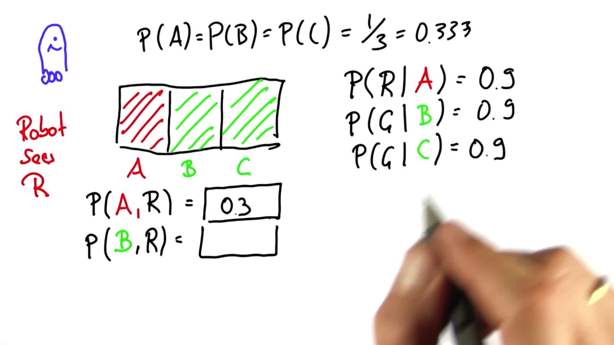

贝叶斯法则
Back to Home
01. 降低不确定性
02. 贝叶斯法则和机器人学
03. 学习传感器数据
04. 使用传感器数据
05. 学习目标：条件概率
06. 学习目标 - 贝叶斯法则
07. 贝叶斯法则
08. 癌症检测
09. 先验与后验
10. 归一化 1
11. 归一化 2
12. 归一化 3
13. 全概率
14. 贝叶斯法则图表
15. 等效线路图
16. 癌症概率
17. 概率给定测试
18. 归一化
19. 归一化概率
20. 疾病检测 1
21. 疾病检测 2
22. 疾病检测 3
23. 疾病检测 4
24. 疾病检测 5
25. 疾病检测 6
26. 贝叶斯法则小结
27. 机器人传感 1
28. 机器人传感 2
29. 机器人传感 3
30. 机器人传感 4
31. 机器人传感 5
32. 机器人传感 6
33. 机器人传感 7
34. 机器人传感 8
35. 归纳总结
36. 练习：Sebastian 在家的概率
Back to Home
31. 机器人传感 5
机器人传感 5
Question:
Start Quiz:

Solution:
Next Concept